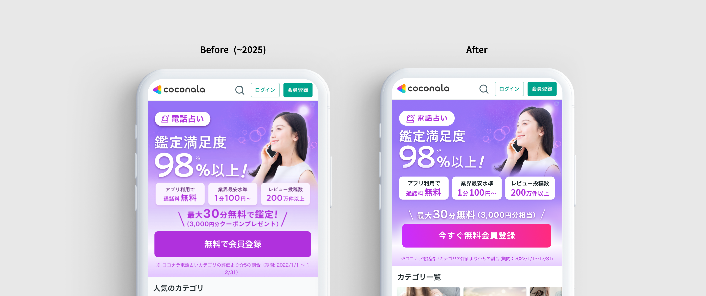
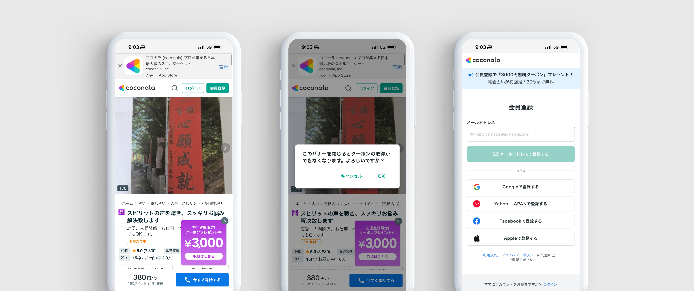
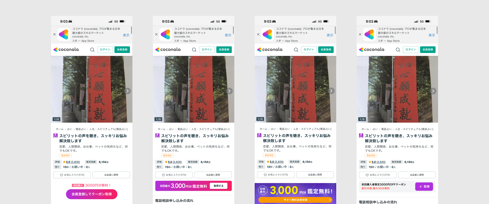

電話占いのバナーを変更＆導線追加で会員登録 40% 増加PJ(企画&デザイン)


Scope of Involvement
サービス詳細ページへの新規導線追加を自ら企画・提案し、承認を獲得。この施策が会員登録 40% 増加の主因となった。
Overview
電話占いの新規購入UUが低下しており、底上げする必要があった
- 電話占いのクーポンがもらえることがひと目で伝わらず、ユーザーの行動喚起につながっていなかった。バナー経由の月間会員登録はほぼ0件に留まっていた。しっかり訴求することで数値が上がる仮説があった。
バナーリデザインに加え、新規導線追加を自ら企画・提案
- アサインされたバナーリデザインに加え、データ分析ツールからサービス詳細ページへの新規導線追加を自ら企画・提案。この施策が会員登録増加の主因となった。
クーポン経由の月間登録を0→200名に拡大
- バナーリデザイン・導線追加後の計測で、バナー経由の月間会員登録数が約0名 → 約200名に拡大。電話占い会員登録ユーザーも1.43倍に増加。
Summary
クーポン訴求の再設計と新規導線追加で、月間会員登録を0→200名に拡大
😟 課題
訴求の弱さが原因で
登録がほぼゼロだった
- クーポンの存在が伝わらず、ユーザーの行動喚起につながっていなかった
- バナー経由の月間会員登録がほぼ0件に留まっていた
😊 貢献
自ら企画した新規導線が
成果の主因に
- データ分析ツールでサービス詳細への流入が最大であることを発見し、新規導線追加を自ら企画・提案
- 提案した施策が会員登録 40% 増加の主因となった
- バナーリデザイン・実装ディレクションも単独で推進
🌱 結果・学び
登録数20倍・会員数
1.43倍を達成
- クーポン経由の月間登録：約0名 → 約200名
- 電話占い会員登録ユーザー：1.43倍に拡大
- デザインの訴求改善が短期間で数値成果に直結することを実証
Process
01
リサーチ
競合5社のクーポン訴求バナーを調査し、視認性改善の方針を整理。同時にデータ分析ツールでサービス詳細ページへの流入が全体の大半を占めることを確認した。
02
企画・要件定義
データ分析ツールの結果をもとにサービス詳細への新規導線追加を自ら企画・提案。事業責任者の承認を得て、バナーリデザインとあわせた2施策の実装要件を定義した。
03
デザイン
5パターンのバナー案を制作し比較提案。損失回避の文言を組み込んだ訴求設計を行い、エンジニアへの実装ディレクションまで担当した。
Research
1. 競合調査でクーポン訴求の視認性の改善方針を整理
2. データを見るとサービス詳細に訪れてるユーザーが最も多いことがわかった
電話占いカテゴリ内 ページ別流入（相対比較）
判断：流入が最も多いサービス詳細ページに会員登録への訴求が存在しない。ここに導線を追加することで登録数を大幅に改善できると判断し、施策として提案した。
Planning & Requirements
1. 大カテゴリのバナーのクーポン訴求を強めるデザインへ
競合調査から、自社バナーはクーポンの存在が伝わりにくい構成だと判断。訴求文言・レイアウト・CTAの3点を改善方針として定義し、バナーリデザインの要件を固めた。
2. サービス詳細への新規導線追加を自ら企画・提案
データ分析ツールでサービス詳細ページへの流入が最大であることを発見。このトラフィックに対して会員登録への訴求が存在しないことを機会損失と判断し、新規導線の追加を自ら企画・提案。事業責任者の承認を得て実装に進んだ。この施策が今回の会員登録増加の主因となった。
Design
1.サービス詳細方向性決め
5パターンのバナーを制作し比較提案。細部を詰める前の発射角の段階で様々なパターンを試した。

2. 損失回避の文言で行動喚起を強化
バツボタン押下時に「このまま閉じるとクーポンを受け取れません」という損失回避の文言を組み込み、ユーザーの意思決定を促す仕掛けを設計。制約を逆手に取った訴求で行動喚起を強化した。